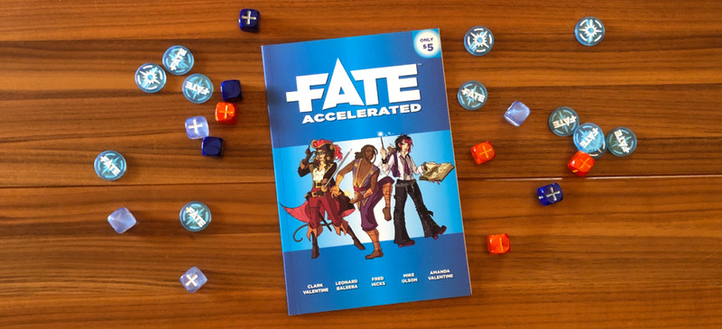
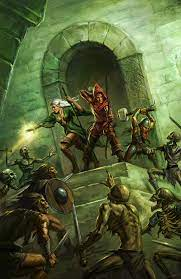

For you all asking about dice, this is a thing that will change according to the systemm if you want to play shadowrun you will only need a bunch of d6(six sided dice),
for d&d and pathfinder you will need a dice set with a d4, d6, d8, d10, d12 and the d20 or more specific for the fate system you will need the fudge die(the one with the plus side and the minus side).
I know that spend a lot of money in a new hobby is no the a thing that everybody is willing to do so we have left here some free options here for you.
- Dungeons and dragons

-
Ok not the mostly friendly free option but you can download the SRD (system reference document),and have the base rules to create a game around it,
is a good base for anyone who want to create, maybe you want to create your own world with your own gods or without them for this the SRD is a good starting point.
Find the SRD here.
- Ironsworn
-
Ironsworn is what I would describe as a variable fantasy tabletop roleplaying game. I use the word variable because at the outset, you are asked to describe your own truths for the world of Ironsworn and these truths place your game somewhere along a spectrum from “grim dark” to not quite “high fantasy”.
Download Ironsworn
- Lady Blackbird
-
Lady Blackbird is an option for you all who want try the good old steam punk to play with your group, to have some with in a setting with flying machine and the good old steam tech.
Download Lady Blackbird
- Fate

- Fate is cool generic RPG system that can be anything you want and is not a number heavy system, this is a more descriptive system.
Get Fate system
- Dungeon Slayers

- I know we mentioned dungeons and dragons in this list but this is different, for that want a quick gamne in a dungeon this one is for you
a light rules-light generic dungeoncrawling fantasy RPG, no optional rules only a quick dungeon exploration session.
Get Dungeon Slayers